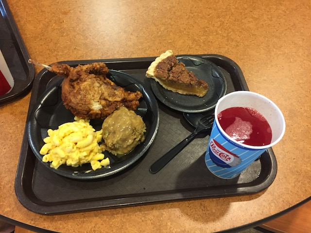

| |
Mini Midwest Trip 2018
Cedar Point Kentucky Kingdom Holiday World Kings Island
All right. We just had a fun morning at Kentucky Kingdom. Now we're just driving through the middle of nowhere Indiana, just cruising along of...Oh hey. What's this?
Yep. If you couldn't tell, we're heading back to Holiday World as there's a couple things they've added that I need to check out.
Ooh. Looks like a quiet day at Holiday World. Lines are gonna be good today. =)
 I really enjoyed this park back in 2010, so I was definetly looking foreward to getting back here.
I really enjoyed this park back in 2010, so I was definetly looking foreward to getting back here.
"Ho Ho Ho! Merry Christmas! I know you don't believe in me, but look at me! I exist! I'm right in front of you! If you point out the fact that I'm a plastic statue, you'll get a whole heap of plastic coal in your stocking."
 All right. Let's start out in the Thanksgiving area. What's over here for us?
All right. Let's start out in the Thanksgiving area. What's over here for us?
 Yep. We're getting back on one of our favorite wooden coasters. The Voyage.
Yep. We're getting back on one of our favorite wooden coasters. The Voyage.
 Really hoping that after 8 years, Voyage is still holding up.
Really hoping that after 8 years, Voyage is still holding up.
Fantastic news. Voyage is running just as great as it was in 2010. I had heard others talking about how it got rougher, and I REALLY don't want Voyage to go down the Hades path, so this made me very happy. Good job taking care of Voyage Holiday World.
OK. Voyage is great. I mean, I put it in my Top 10 Wooden Coasters List. But it's NOT the best wooden coaster. Sorry.
 F*CK!!! Thunderbird is down for technical difficulties. Really hoping that it opens up later today and that we don't get screwed out of it as it's one of the few things here that's new for me.
F*CK!!! Thunderbird is down for technical difficulties. Really hoping that it opens up later today and that we don't get screwed out of it as it's one of the few things here that's new for me.
Aww. Pilgrims Plunge's grave makes me sad. That ride was awesome. =(
Might as well have some fun on Gobbler Getaway while we're here.
"Psst. I need you to call the turkeys for me. I'm rounding them up so I can start my own resteraunt chain, Turk-Fil A. Same great sandwiches, just without the homophobia controversy. And turkeys."
So yeah. Holiday World is one of the few parks in the country that offers free drinks. So of course, a lot of Mountain Dew will be consumed here.
My body might hate you Holiday World, but my taste buds and my wallet love you. ;)
 Phew. That breakdown wasn't very long, as 15 minutes later, it was back open. So happy I'm gonna get to ride this today.
Phew. That breakdown wasn't very long, as 15 minutes later, it was back open. So happy I'm gonna get to ride this today.
OK. So Thunderbird is a very unique ride. First off, this is the first B&M launched coaster. I mean, yeah. There is Incredible Hulk at Universal Orlando, but they didn't actually do the launch. This is the first coaster B&M did with a real launch, that they did themselves. And hey, it's another Wing Rider. It certainly seems like the most interesting Wing Rider that's been built.
I have to say! I was really impressed with Thunderbird. First off, the launch is actually really good. Sure, it's no Xcelerator, but this caught me by surprise as I was expecting a weaker launch, so I'm super happy to be proven wrong.
That, and Thunderbird is EASILY the best B&M Wing Rider. Before this, if you ignored the horrible choking restraints on Raptor & Wild Eagle, then those two and Gatekeeper would all approximately be on par. This is first Wing Rider that genuinely feels like a step up from the others and isn't coaster enthusiast nerdiness nitpicking. It really is a much better ride.
It's the first Wing Rider that felt like it was trying to be snappy instead of floaty. Sure, it's not on the same level as the old school B&Ms from the 90s, but still. I'm super happy that Thunderbird exceeded my expectations and wasn't just a typical Wing Rider with a gimmicky launch like I was expecting. Great job Holiday World.
Hello Hyena Falls, that's way out over here and isolated from all the other water slides at Splashin Safari.
Speaking of other water slides. ;)
Yep. We're actually checking out Splashin Safari this time. I always wanted to check it out, but only did Wildebeest last time. Well this time, I'm doing the whole park. =)
Holiday World doesn't just provide free parking and soda. They also have free sunscreen, cause you know. Cancers bad. M'kay.
Hmm. I'm familiar with Holidog and Safari Sam. But I have no idea who these giraffes are. They're not with the other mascots? They're just sort of standing here in bathing suits. Who are these animals?
I see the two main water slides we're looking foreward to. =P
First up, Wildebeest. The one slide I did last time. Still easily my favorite water coaster and one of my favorite water slides ever.
 And finally, the other new thing that I've been wanting to try. Mammoth.
And finally, the other new thing that I've been wanting to try. Mammoth.
 HOLY CRAP!!! THIS THING IS AWESOME!!! It doesn't look like much, but there are a lot of "OH SH*T!!!" moments on this slide. And when you're in a circular raft with friends, it makes it even better, as you can see everyones faces, and you're all just having a blast. With the exception of a certain death trap in Italy, this is my favorite water slide.
HOLY CRAP!!! THIS THING IS AWESOME!!! It doesn't look like much, but there are a lot of "OH SH*T!!!" moments on this slide. And when you're in a circular raft with friends, it makes it even better, as you can see everyones faces, and you're all just having a blast. With the exception of a certain death trap in Italy, this is my favorite water slide.
We did the two main water slides I wanted to do. But hey! I do want to check out the rest of Splashin Safari. So here we are at Zoombabwe, once the largest enclosed raft slide in the world. Fun, I particuarly liked the weird sort of...they look like a mix between aliens and those tiki heads, inside the water slide.
 It's just a standard mat racer, but with friends, these things are a blast.
It's just a standard mat racer, but with friends, these things are a blast.
 Otorongo may not look like much, but this slide is really fun. Make sure to check it out if you're here.
Otorongo may not look like much, but this slide is really fun. Make sure to check it out if you're here.
And now we're in Halloweentown. Evan just came.
All right. Water park fun is over. But while we have our bathing suits on, let's do the water rides. So yeah. We did their rapids. It's fun, but nothing crazy.
This log flume however, is AWESOME!!! It may look like a small crappy log flume. And yeah. It is pretty small. However, it has some cool tombstones that are amusing. And they play "They're Coming to Take Me Away" by Dr. Demento. Dude. That is AWESOME!!! =)
Oh yeah. There are two more wooden coasters for us to do.
OK. Legend was really good. I know I liked it a lot in 2010, but this time, I REALLY liked it. It seemed even meaner and more agressive now. To the point where I think I now rank it above the Raven. It just got REALLY good.
 Speaking of the Raven.
Speaking of the Raven.
Edgar Allen Poe: The Ride.
Yeah. That's what I like to see going into the Raven.
Do you have to dive off that or could you just jump? Cause I could jump that (I jump off 70 ft cliffs for fun). Just not dive it.
 Yeah. I know I used to have Raven in my Top 10 Wooden Coasters, and it's still really good. But...yeah. I am gonna have to now put Legend above it. It just was running SO good today. =)
Yeah. I know I used to have Raven in my Top 10 Wooden Coasters, and it's still really good. But...yeah. I am gonna have to now put Legend above it. It just was running SO good today. =)
That second half in the woods is still nuts.
OK. So that's supposed to be some sort of seat that helps get handicapped people from their wheelchair to the seat. I'm not sure why it seems only Raven has this, but if it gets more people to ride Raven, the better.
 Yeah. We totally need more rides on Voyage with how good its running. =)
Yeah. We totally need more rides on Voyage with how good its running. =)
 So we decided to do the Plymouth Rock Cafe for dinner. The gimmick of this resteraunt is that it's Thanksgiving dinner year round. The only problem is that (unpopular opinion here) I find the traditional Thanksgiving dinner to be pretty overrated honestly.
So we decided to do the Plymouth Rock Cafe for dinner. The gimmick of this resteraunt is that it's Thanksgiving dinner year round. The only problem is that (unpopular opinion here) I find the traditional Thanksgiving dinner to be pretty overrated honestly.

Not a problem. For people like me, you can substitue the turkey for fried chicken instead. And you can still get the parts of Thanksgiving I do like, such as Stuffing and Pie. So yeah. Thumbs up for Plymouth Rock Cafe.
So Big Red is really popular here. It's a soda that's primarily avaliabe in the Midwest and Texas (though you can get it in all 50 states), but over here, it's so popular that they have it on tap. It's far from my favorite soda as I'm not a huge fan of cream sodas and bubblegum sodas, but hey. It's still good enough, and I might as well have what is really popular in Kentucky and Southern Indiana, which is basically where we are today.
Anyone else want to get another ride on Thunderbird? It really is that good. =)
And one more ride on Legend while we're at it.
 In hindsight, I should've ran off and grabbed one final quick Raven ride. Meh, oh well.
In hindsight, I should've ran off and grabbed one final quick Raven ride. Meh, oh well.
#1. Holiday World totally deserves that award. #2. Ooh! I love being reminded of Liseberg! I miss that park! =)
 Thanks for a great afternoon Holiday World. I loved Splashin Safari, Thunderbird was really good, and I'm happy that all of your woodies are holding up really well.
Thanks for a great afternoon Holiday World. I loved Splashin Safari, Thunderbird was really good, and I'm happy that all of your woodies are holding up really well.
And driving back to our hotel in Florence (Y'all), we encountered one of the craziest bus drivers, I think I ever saw. This person passes us, then slows down. So we pass them. Then they start speeding up, and yeah. We get passed by this EXACT same bus. And they then slow down, so yeah. We pass them, and then they floor it and try to pass us again, weaving through other cars, yeah. What the f*ck was wrong with this bus driver!? And why was this asshole so hell-bent on being in front of us, just to slow down? What!? Dude! Or Lady! What the hell is your problem!? Seriously, this asshole took driving lessons from Cruella DeVil. Eventually, we lose them for good after having to make a rest stop. Never thought I'd be saying this, but where was the Kentucky State Police?
Kings Island
Home
|